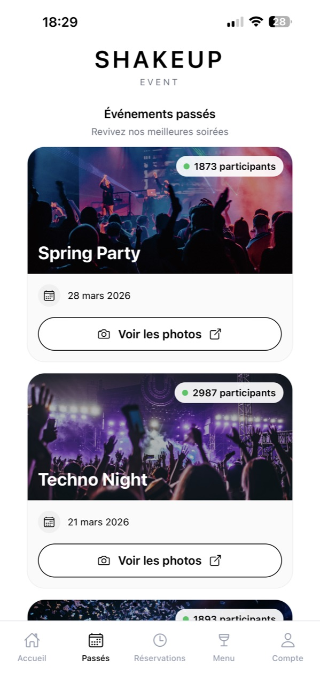
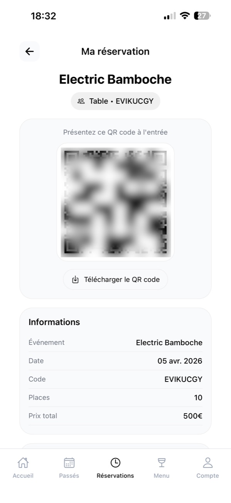

P—01 · Case study
ShakeUp
An end-to-end platform for running nightlife events: guests book their table in the app, staff scan tickets and take orders on the floor, and the organizer runs everything from a back office. Live on the App Store and Google Play, and on its way to becoming a SaaS.
A night out is an information system.
The project started under the codename The Forest as IMT Nord Europe’s second-year engineering project: a real client, a spec, a budget, and regular reviews with two faculty advisors.
The problem: an event organizer has to juggle table bookings, door entry, orders and payments all at once. The goal was to bring all of it into a single tool that works for guests at home and for staff in the middle of a packed night.


Six roles, one app.
The hard part of the product is that everyone sees a different app. On sign-in, the app reads the user’s role and routes them to the right interface.
| Role | What they do |
|---|---|
| Guest | Browses events, books a table, shows their QR code, checks the menu. |
| Staff | Scans guests in, tracks tables live, takes orders at the table. |
| Bar prep | Sees orders come in in real time, marks them ready, then served. |
| Cashier | Rings up walk-in sales during the event. |
| Accounting | Approves payments from the back office. |
| Admin | Creates events, the menu, the floor plan and staff accounts, and reviews results. |
From launch to last bottle.
- Launch. The admin creates the event and its floor plan in the back office. Users get a push notification.
- Booking. The guest picks a table on the floor plan, enters the party size and pays the deposit through the partner ticketing platform.
- Ticket. A confirmed booking generates a QR code in the app, which can also be added to Apple Wallet.
- Entry. Staff scan the QR code at the door: the table is marked “arrived” and the assigned server is notified.
- Order. At the table, staff scan the table’s QR code and enter the order. It shows up for accounting and for the bar.
- Payment. Accounting approves the payment; the deposit already paid is deducted automatically.
- Service and wrap-up. The bar marks the order “ready”, then “sent”. After the event, the admin reviews aggregated results.
Three clients, one backend.
The mobile app and the back office share the same Firebase project. Every sensitive write (bookings, orders, payments, roles) goes through server-side Cloud Functions, never straight from a client.
Expo · iOS & Android · OTA updates
Auth · Firestore · Storage · 50 Cloud Functions (Node 22)
Role-based dashboard · deployed on Vercel
Around that core: iOS push notifications via APNs, event images on Cloudinary, builds and updates with EAS, signed Apple Wallet passes, and a webhook for the partner ticketing platform.
What taught me the most.
- AI-powered floor plan import. Placing dozens of tables on a floor plan by hand takes forever. The back office provides a prompt that you give to a multimodal LLM (ChatGPT, Gemini or Claude) along with a photo of the floor plan; the model returns structured JSON (categories, tables, positions). The back office validates it, corrects the coordinates for how the image is cropped, then merges it in without ever overwriting a table that’s already booked.
- Interactive floor plan. In the back office, you drop tables onto the venue’s floor plan, move them and resize them. Positions are stored as percentages, so the app renders the same plan on any screen, with zoom.
- Ticketing API. I wrote the spec for the integration with the ticketing platform (6 endpoints). Every call is signed with HMAC-SHA256 so nobody can validate a deposit from the outside.
- Apple Wallet without a native module. The pass is generated and signed by a Cloud Function, then opened in Safari. As a result, the feature could ship as an OTA update, with no new App Store release.
- Roles and security. The role lives in the auth token and is re-checked server-side in every function. Staff accounts can be disposable and scoped to a single event.
Verifying a webhook.
When the ticketing platform confirms a deposit, it calls this endpoint. We recompute the message signature with the shared key and compare it in constant time before touching the database.
exports.ticketingWebhook = onRequest(async (req, res) => { // … method, config and body size are checked first const header = String(req.get("X-ShakeUp-Signature") || ""); const expected = "sha256=" + crypto .createHmac("sha256", secret).update(rawBody).digest("hex"); const a = Buffer.from(header), b = Buffer.from(expected); if (a.length !== b.length || !crypto.timingSafeEqual(a, b)) { return res.status(401).json({ error: "invalid-signature" }); } // The booking must exist and match the event and table in the payload const resa = (await db.doc(`tablesReservation/${reservationId}`).get()).data(); if (body.eventId !== resa.eventId) return res.status(422).json({ error: "reservation-mismatch" }); await applyDepositValidation({ reservationId, source: "api" }); res.status(200).json({ ok: true }); });
A project lead who codes.
- Scoping and design: gathered requirements with the client, designed flows and screens in Figma, and got them signed off before development.
- Architecture: chose the stack, designed the data model, split the logic into Cloud Functions, wrote the security rules.
- Development: built a large share of the app, the back office and the backend.
- Team lead: ran sprints across the team of five, kept the project within a €300 budget, reported to the faculty advisors.
- Shipping: published to the App Store and Google Play, deployed the back office.
What shipped.
From app to SaaS.
ShakeUp was built for a single organizer. The next step is to turn it into a SaaS that any nightlife event organizer in France can use, with their own events, team and menu.
I’m driving this as founder, drawing on both sides of what I’ve learned: architecture and product from building ShakeUp, prospecting and negotiation from my time at CLEEVEN.
Lessons learned.
- A multi-role product is designed around flows, not screens: who does what, and at what point in the night.
- Putting business logic on the server from day one means you never have to trust the client’s phone.
- An approved mockup costs far less than a feature you have to rebuild.
- Leading a team is mostly about making it visible who’s doing what, and by when.